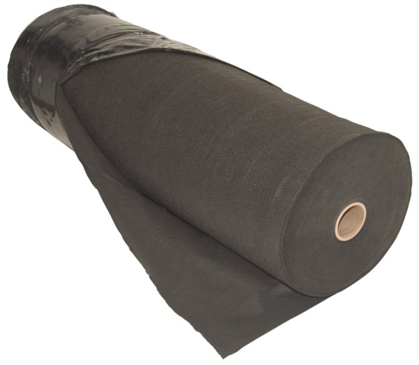

Non-Woven Geotextile Fabrics and Landscape Fabrics
General & Heavy-Duty Filter Fabric | Drainage Fabric | Pond Underlayment | Rip Rap Fabric
Non-woven geotextile fabrics are primarily used for projects where highly permeable separators are required. This includes applications that must allow water to flow while preventing soil erosion or soil loss.
Non-woven geotextiles are ideal for use in foundation drainage, behind retaining walls and gabions, in sub-drains, and under rip-rap & armourstone.
Most environmental codes and regulations will require geosynthetic linings for landfill and waste management projects.
Our non-woven geotextile fabrics contain high-grade polypropylene fibres to provide physical strength and excellent fluid management properties.
Fabric Weights
Our non-woven geotextile and lanscape fabric are available in rolls with standard roll widths of 12'6" and 15'. Rolls of our geotextile fabric can be custom cut to your specific width requirements. In addition, we offer a wide of in-stock geotextile fabric weights.
| Product | Weight |
| Winfab 310N | 3.1 oz/yd2 |
| Winfab 400N | 4.0 oz/yd2 |
| Winfab 600N | 6.0 oz/yd2 |
| Winfab 800N | 8.0 oz/yd2 |
Heavier weight fabrics products are available. Please ask.